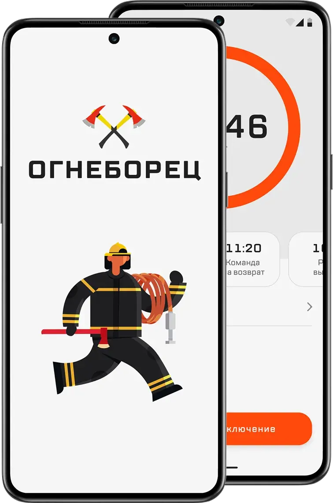
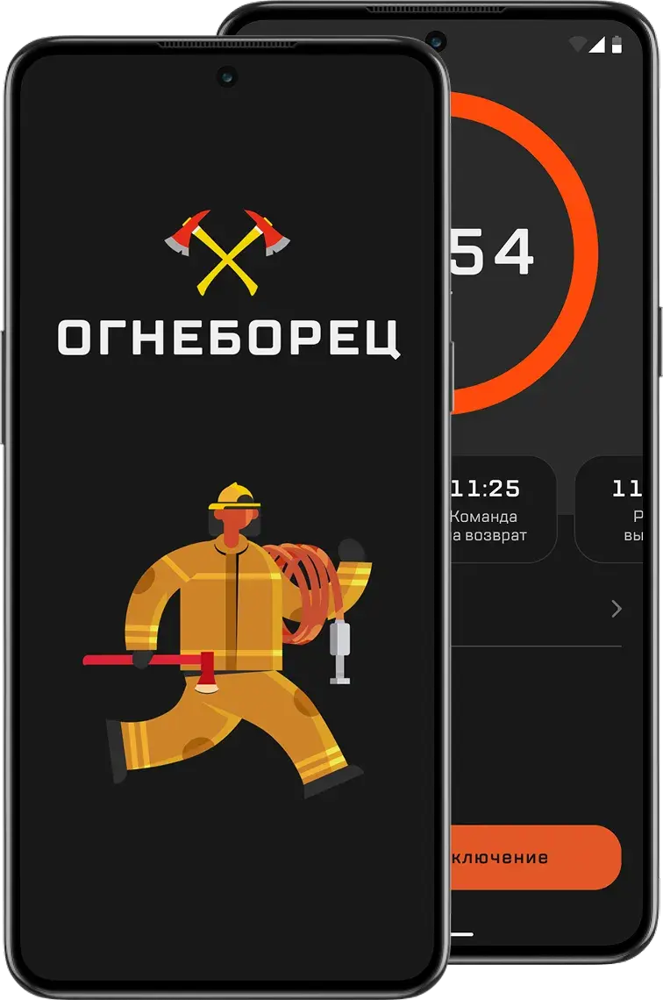

Огнеборец
Мобильное приложение для пожарных, которое отслеживает давление в баллонах и время, когда нужно вернуться в безопасное место
Расчёт вручную
6мин
на планшете и калькуляторе
Расчёт в приложении
47сек
почти в 8 раз быстрее


Контекст и проблема
Ручные вычисления занимают время и повышают риск ошибок
Идея создать приложение появилась у начальника караула Юрия Коновалова. Юрий сам участвует в тушении пожаров, координирует работу звена и знает, с какими сложностями приходится сталкиваться.
Кто такие постовые. Постовой отвечает за безопасность пожарных. Он контролирует давление в баллонах, рассчитывает время возврата и следит за общей обстановкой.
Для вычислений используется картонный планшет с таблицей. Данные записываются и сравниваются вручную.
При изменении условий, например при повышенном задымлении, постовой корректирует расчёты с помощью формул. В экстренной ситуации ошибка может стать критической. Если пожарные вовремя не выйдут из опасной зоны, запаса в баллонах не хватит на обратный путь.
Цель. Автоматизировать расчёты, чтобы снизить нагрузку на постового и исключить ошибки. Приложение рассчитывает безопасное время выхода пожарных из опасной зоны с учётом текущего давления в баллонах и изменения условий пожаротушения.
Исследование
Как ведутся расчёты и какие проблемы возникают
На момент исследования не было мобильного приложения, которое рассчитывало бы время возврата и автоматически фиксировало данные о каждом включении.
Чтобы понять, как ведутся расчёты и какие проблемы возникают, провёл интервью с постовыми со стажем 8, 11 и 12 лет. Это помогло выявить общие проблемы и особенности работы в зависимости от опыта.
1. Опишите процесс начала работы
Андрей, стаж 12 лет
По приезде выдвигаемся к месту пожара, затем фиксирую давление в баллонах у пожарных и сообщаю командиру, какой запас можно израсходовать
Игорь, стаж 8 лет
У границы НДС (непригодной для дыхания среды) записываю стартовое давление в баллонах и передаю данные командиру звена
Сергей, стаж 11 лет
Перед началом пожаротушения фиксирую давление в баллонах, рассчитываю, когда звену нужно покинуть опасную зону, и передаю данные командиру звена
2. Как рассчитываете время работы звена?
Андрей, стаж 12 лет
Исходя из начального давления, рассчитываю время возврата перед входом в непригодную для дыхания среду. Во время пожаротушения пересчитываю давление в баллоне и время возврата. После выхода записываю остаточное давление и время выхода
Игорь, стаж 8 лет
С помощью формул перед включением. Во время работы пересчитываю оставшееся время по расходу
Сергей, стаж 11 лет
Использую стандартные формулы перед началом пожаротушения и далее в зависимости от условий пересчитываю время
3. Чем именно пользуетесь для расчётов и записи данных?
Андрей, стаж 12 лет
Планшет. Данные считаю на калькуляторе
Игорь, стаж 8 лет
Планшет. Иногда делаю пометки в телефоне, если не успеваю записать сразу
Сергей, стаж 11 лет
Планшет или блокнот
4. Почему выбрали именно этот способ?
Андрей, стаж 12 лет
Планшет всегда под рукой
Игорь, стаж 8 лет
Привычка. И можно быстро посмотреть старые записи
Сергей, стаж 11 лет
Так всегда делалось, никто не пытался это поменять
5. Что вам нравится в текущем способе работы?
Андрей, стаж 12 лет
Сложно сказать, уже привык использовать планшет
Игорь, стаж 8 лет
Можно быстро внести исправления в заметках телефона, если что-то не так записал
Сергей, стаж 11 лет
Не завишу от зарядки и интернета
6. Какие недостатки?
Андрей, стаж 12 лет
Можно ошибиться, особенно в спешке и когда данные нужно быстро пересчитать. Приходится заполнять всё заново или вносить правки
Игорь, стаж 8 лет
Считать вручную. Всё в разных местах, переписывание занимает время
Сергей, стаж 11 лет
Иногда блокнот теряется или пачкается, потом надо вспоминать данные. Если нужно перепроверить, это занимает время
7. Пробовали ли другие способы фиксации данных?
Андрей, стаж 12 лет
Когда-то думали попробовать цифровой планшет, но у нас нет единой системы
Игорь, стаж 8 лет
Использую блокнот в телефоне
Сергей, стаж 11 лет
Только черновик, обычный блокнот
8. Какие сложности с расчётами во время включения?
Андрей, стаж 12 лет
Когда условия меняются, приходится пересчитывать данные «на ходу». Считаю с помощью калькулятора вручную, получается не так быстро, как хотелось бы
Игорь, стаж 8 лет
Если ошибся в расчётах, это может сказаться на безопасности звена. Например, ошибка в расчёте остаточного времени работы
Сергей, стаж 11 лет
Бывает, что расход увеличился, но вовремя этого не заметили, и оперативно посчитать довольно сложно
9. Как часто приходится пересчитывать показатели?
Андрей, стаж 12 лет
Если пожар сложный, то почти на каждом вызове
Игорь, стаж 8 лет
В среднем каждые 10–15 минут, если условия меняются
Сергей, стаж 11 лет
Иногда за одно включение приходится делать 2–3 пересчёта
10. Сколько времени уходит на расчёт и запись данных?
Андрей, стаж 12 лет
Если условия не меняются, минут 5–7
Игорь, стаж 8 лет
Если что-то пересчитываю, до 10 минут
Сергей, стаж 11 лет
Когда в журнале путаница, исправления могут занять 10–15 минут
11. Есть ли нюансы в использовании планшета?
Андрей, стаж 12 лет
Ручное заполнение, но в принципе уже привык. При сдаче отчётности могут потребоваться корректировки данных, оперативно в планшете этого не сделать, приходится переписывать
Игорь, стаж 8 лет
Неудобно считать и заполнять вручную
Сергей, стаж 11 лет
Ручное заполнение, долго считать
По ответам постовых собрал последовательность их действий во время включения.
Постовой выдвигается к границе зоны непригодной для дыхания среды (НДС)
Фиксирует стартовые показатели давления в баллонах
Рассчитывает время возврата, общее защитное время и общее время работы
Передаёт командиру звена расчётные данные
Контролирует давление в баллонах и при достижении критических значений даёт команду «На выход»
Фиксирует результаты в журнале учёта работы
Из интервью выделил три главные проблемы.
-
Инсайт 01
Расчёты требуют частого пересчёта и могут содержать ошибки
-
Инсайт 02
Разные способы записи данных приводят к путанице и потере информации
-
Инсайт 03
Ручное заполнение занимает время и неудобно в полевых условиях
Проектирование
Быстро вносить данные и видеть время без лишних действий
При проектировании интерфейса важно было учесть условия работы постового. Ему нужно быстро вносить данные и видеть информацию о времени без лишних действий.
На основе инсайтов выделил сценарии использования и собрал предварительный путь пользователя.
- Начало работы. Ввод данных о баллонах и фиксация стартовых показателей.
- Мониторинг. Приложение автоматически рассчитывает время возврата и отслеживает давление в баллонах.
- Экстренный выход. При критическом снижении давления в баллонах постовой получает предупреждение и сообщает команде о срочной эвакуации.
Тестирование
Как проверяли решение и вносили улучшения
Промежуточную версию приложения передали в пожарную часть. Тестировали сами пожарные в полевых условиях, во время учебных выездов, а я собирал обратную связь. Так стало видно, какие элементы интерфейса и функции требуют доработки.
01 / 02
Пожарные отметили удобство и скорость автоматических расчётов. Остальное пошло в доработку.
Ввод участников. Вводить ФИО вручную оказалось неудобно при частом использовании. Добавили сохранение и выбор смены, чтобы каждый раз не добавлять участников заново.
Формулы. Некоторые формулы требовали доработки, их доработали.
Таймер. Постовому важнее всего время возврата, оно должно быть всё время перед глазами. Таймер переработали и увеличили, акцент сделан на общем времени.
Отчёты. Отчёт о тушении заполняет постовой или кто-то из звена. Без приложения пришлось бы сверяться с телефоном и переписывать данные в таблицу вручную. Все данные уже есть в приложении, поэтому отчёт формируется автоматически по стандартизированной форме.
Ещё сократили шаги перед запуском включения.
Финальный вариант
Задуманное как калькулятор, приложение расширили по обратной связи
Таймер общего времени занимает большую часть экрана, чтобы его было видно сразу. Если время вышло, приложение подаёт звуковой сигнал и меняет цвет интерфейса.
Работа звена
Время вышло
Включение. Смены можно сохранять заранее, чтобы перед началом тушения не тратить время на заполнение.
События. Добавили маркировку критических событий во время пожара. Время возврата пересчитывается мгновенно.
Отчёт. По завершении пожаротушения формируется отчёт о включении с выгрузкой показаний. Доступна история по каждому включению.
Результат
Время расчёта сократилось с 6 минут до 47 секунд
Было
6мин
расчёт вручную
Стало
47сек
расчёт в приложении
Теперь постовой не считает вручную, а получает расчёт в приложении. В реальной эксплуатации снизился риск ошибок при расчётах. Оформление документов стало менее трудоёмким, отчёт выгружается с заполненными данными.
Что дальше. Квартальные отчёты в электронном виде, учёт аппаратов, которые стоят на вооружении в подразделениях, и карта с расположением пожарных гидрантов.